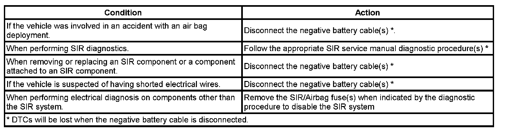

Air Bag(s) Arming and Disarming: Service and Repair
SIR DISABLING AND ENABLING
SIR component location affects how a vehicle should be serviced. There are parts of the SIR system installed in various locations around a vehicle. To find the location of the SIR components refer to SIR Identification Views.

There are several reasons for disabling the SIR system, such as repairs to the SIR system or servicing a component near or attached to an SIR component. There are several ways to disable the SIR system depending on what type of service is being performed. The information covers the proper procedures for disabling/enabling the SIR system.
SIR Service Precautions
CAUTION: When performing service on or near the SIR components or the SIR wiring, the SIR system must be disabled. Failure to observe the correct procedure could cause deployment of the SIR components. Serious injury can occur. Failure to observe the correct procedure could also result in unnecessary SIR system repairs.
The inflatable restraint sensing and diagnostic module (SDM) maintains a reserved energy supply. The reserved energy supply provides deployment power for the air bags if the SDM loses battery power during a collision. Deployment power is available for as much as 1 minute after disconnecting the vehicle power. Waiting 1 minute before working on the system after disabling the SIR system prevents deployment of the air bags from the reserved energy supply.
General Service Instructions
The following are general service instructions which must be followed in order to properly repair the vehicle and return it to its original integrity:
- Do not expose inflator modules to temperatures above 65°C (150°F).
- Verify the correct replacement part number. Do not substitute a component from a different vehicle.
- Use only original GM replacement parts available from your authorized GM dealer. Do not use salvaged parts for repairs to the SIR system.
Discard any of the following components if it has been dropped from a height of 91 cm (3 feet) or greater:
- Inflatable restraint sensing and diagnostic module (SDM)
- Any Inflatable restraint air bag module
- Inflatable restraint steering wheel module coil
- Any Inflatable restraint sensor
- Inflatable restraint seat belt pretensioners
- Inflatable restraint Passenger Presence System (PPS) module or sensor
Disabling Procedure - Air Bag Fuse
1. Turn the steering wheel so that the vehicles wheels are pointing straight ahead.
2. Place the ignition in the OFF position.
3. IMPORTANT: The SDM may have more than one fused power input. To ensure there is no unwanted SIR deployment, personal injury, or unnecessary SIR system repairs, remove all fuses supplying power to the SDM. With all SDM fuses removed and the ignition switch in the ON position, the AIR BAG warning indicator illuminates. This is normal operation, and does not indicate a SIR system malfunction.
Locate and remove the fuse(s) supplying power to the SDM.
4. Wait 1 minute before working on the system.
Enabling Procedure - Air Bag Fuse
1. Place the ignition in the OFF position.
2. Install the fuse(s) supplying power to the SDM.
3. Turn the ignition switch to the ON position. The AIR BAG indicator will flash then turn OFF.
4. Perform the Diagnostic System Check - Vehicle if the AIR BAG warning indicator does not operate as described. Refer to Diagnostic System Check - Vehicle. Initial Inspection and Diagnostic Overview
Disabling Procedure - Negative Battery Cable
1. Turn the steering wheel so that the vehicles wheels are pointing straight ahead.
2. Place the ignition in the OFF position.
3. Disconnect the negative battery cable from the battery.
4. Wait 1 minute before working on system.
Enabling Procedure - Negative Battery Cable
1. Place the ignition in the OFF position.
2. Connect the negative battery cable to the battery.
3. Turn the ignition switch to the ON position. The AIR BAG indicator will flash then turn OFF.
4. Perform the Diagnostic System Check - Vehicle if the AIR BAG warning indicator does not operate as described. Refer to Diagnostic System Check - Vehicle. Initial Inspection and Diagnostic Overview